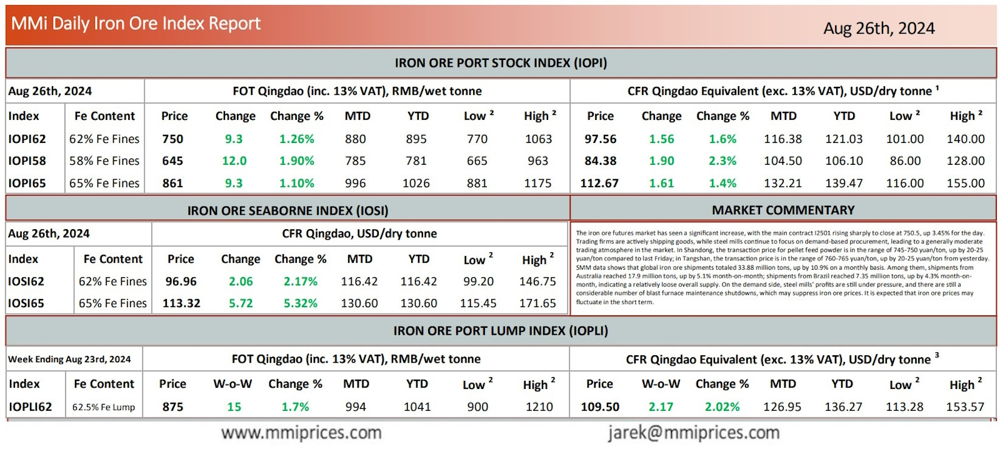

The iron ore futures market has seen a significant increase, with the main contract I2501 rising sharply to close at 750.5, up 3.45% for the day.Trading firms are actively shipping goods, while steel mills continue to focus on demand-based procurement, leading to a generally moderate trading atmosphere in the market. In Shandong, the transaction price for pellet feed powder is in the range of 745-750 yuan/ton, up by 20-25 yuan/ton compared to last Friday; in Tangshan, the transaction price is in the range of 760-765 yuan/ton, up by 20-25 yuan/ton from yesterday. SMM data shows that global iron ore shipments totaled 33.88 million tons, up by 10.9% on a monthly basis. Among them, shipments from Australia reached 17.9 million tons, up by 5.1% month-on-month; shipments from Brazil reached 7.35 million tons, up by 4.3% month-on- month, indicating a relatively loose overall supply. On the demand side, steel mills’ profits are still under pressure, and there are still a considerable number of blast furnace maintenance shutdowns, which may suppress iron ore prices. It is expected that iron ore prices may fluctuate in the short term.

Download PDFSource: Metals Market Index (MMi)